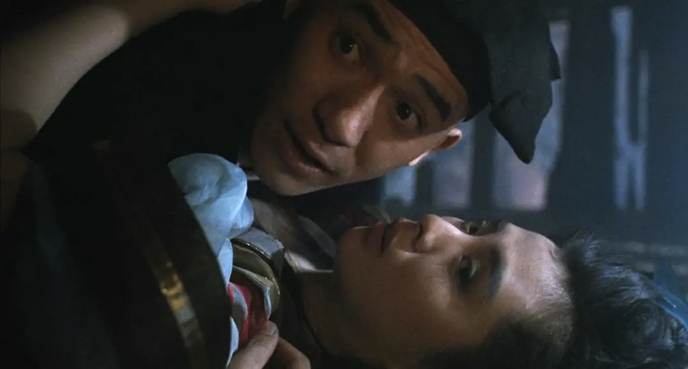

<?xml version="1.0" encoding="UTF-8"?>
<rss version="2.0"
xmlns:content="http://purl.org/rss/1.0/modules/content/"
xmlns:dc="http://purl.org/dc/elements/1.1/"
xmlns:slash="http://purl.org/rss/1.0/modules/slash/"
xmlns:atom="http://www.w3.org/2005/Atom"
xmlns:wfw="http://wellformedweb.org/CommentAPI/">
<channel>
<title>毒奶博主丨欢迎使用代理访问本站。 - 经典电影</title>
<link>https://limbopro.xyz/tag/经典电影/</link>
<atom:link href="https://limbopro.xyz/feed/tag/%E7%BB%8F%E5%85%B8%E7%94%B5%E5%BD%B1/" rel="self" type="application/rss+xml" />
<language>zh-CN</language>
<description></description>
<lastBuildDate>Sat, 02 Nov 2019 16:07:00 +0800</lastBuildDate>
<pubDate>Sat, 02 Nov 2019 16:07:00 +0800</pubDate>
<item>
<title>倩女幽魂丨1987-1991</title>
<link>https://limbopro.xyz/archives/4372.html</link>
<guid>https://limbopro.xyz/archives/4372.html</guid>
<pubDate>Sat, 02 Nov 2019 16:07:00 +0800</pubDate>
<dc:creator>毒奶</dc:creator>
<description><![CDATA[via 豆瓣电影本文隶属于 影视推荐 分类，看电影不用愁；主理人说1.倩女幽魂丨1987-1991，程小东导演作品；一口气看完，王祖贤，美滴很，三个不同版本的故事，光怪陆离，兰若寺是个神奇的地方...]]></description>
<content:encoded xml:lang="zh-CN"><![CDATA[
<p></p><p>via <a href="https://movie.douban.com/subject/1297447/">豆瓣电影</a></p><p>本文隶属于 <a href="../../../category/films-recommend/index.html">影视推荐</a> 分类，看电影不用愁；</p><h2>主理人说</h2><p>1.倩女幽魂丨1987-1991，<a href="https://movie.douban.com/celebrity/1280664/">程小东</a>导演作品；一口气看完，<a href="https://movie.douban.com/celebrity/1166896/">王祖贤</a>，美滴很，三个不同版本的故事，光怪陆离，兰若寺是个神奇的地方，黑山是一座尸山，黑山老妖是树精...，女鬼都很美...；</p><p>2.那个年代认真拍电影，经典；<br>3.蒲松龄大大威武，文末附注有<code>聊斋志异</code>下载；</p><h2>倩女幽魂 (1987)</h2><p>上映日期: 1987-07-18(中国香港) / 2011-04-30(中国大陆)<br>豆瓣 TOP250</p><h2>预告</h2><p><video src="http://vt1.doubanio.com/201911021609/97e451e22d70617282704d1d3fc27aaf/view/movie/M/301370740.mp4" width="100%" height="320" controls="controls"></video></p><h2>豆瓣评论</h2><p></p><p>小贤之眉宇，没有再漂亮的。<br>via missfaye2005-12-13</p><h2>倩女幽魂2：人间道 倩女幽魂II 人間道 (1990)</h2><p></p><p>via <a href="https://movie.douban.com/subject/1296629/">豆瓣电影</a></p><h2>倩女幽魂3：道道道 倩女幽魂Ⅲ 道道道 (1991)</h2><p></p><p>这一部已经跟小倩完全无关了，而我个人更偏爱这部；很多人不喜欢这一部的出现，说：”何必有三？“... 我...；</p><p></p><h3>录屏</h3><p><video src="../../../usr/uploads/2019/11/2944600537.mp4" width="100%" height="320" controls="controls"></video></p><p>via <a href="https://movie.douban.com/subject/1298040/">豆瓣电影</a></p><h2>倩女幽魂在线观看</h2><p>*优爱腾都是可以看的</p><p>倩女幽魂丨1987：<a href="https://www.nfmovies.com/video/?28197-1-0.html">奈飞影视</a><br>倩女幽魂丨1990:人间道 <a href="https://www.nfmovies.com/detail/?36465.html">奈飞影视</a><br>倩女幽魂丨1991:道道道 <a href="https://www.nfmovies.com/detail/?4365.html">奈飞影视</a></p><p>或使用附注<code> 毒奶搜索</code> 搜索在线资源；</p><h2>附注</h2><h3>蒲松龄：聊斋志异</h3><p>1.<a href="../../../usr/uploads/2019/11/4077260235.pdf">聊斋志异（全2册）.pdf</a><br>2.<a href="../../../usr/uploads/2019/11/555820885.azw3">聊斋志异（全2册）.azw3</a><br>3.<a href="../../../usr/uploads/2019/11/1556105895.mobi">聊斋志异（全2册）.mobi</a><br>4.<a href="../../../usr/uploads/2019/11/84909118.epub">聊斋志异（全2册）.epub</a></p><h3>毒奶搜索</h3><p><a href="../../../search.html">毒奶搜索</a></p><h2>联系主理人</h2><p>1.关注频道 <a href="https://t.me/limboprossr">https://t.me/limboprossr</a> 不失联；<br>2.<code>毒奶粉</code>们（我管我的Fans）可联系 <a href="https://t.me/limboprobot">TG机器人</a> 或发送<del> 邮件</del>获取帮助；</p><p>3.或点击<code>本页面右下角</code>的聊天按钮联系；</p>
]]></content:encoded>
<slash:comments>0</slash:comments>
<comments>https://limbopro.xyz/archives/4372.html#comments</comments>
<wfw:commentRss>https://limbopro.xyz/feed/archives/4372.html</wfw:commentRss>
</item>
</channel>
</rss>